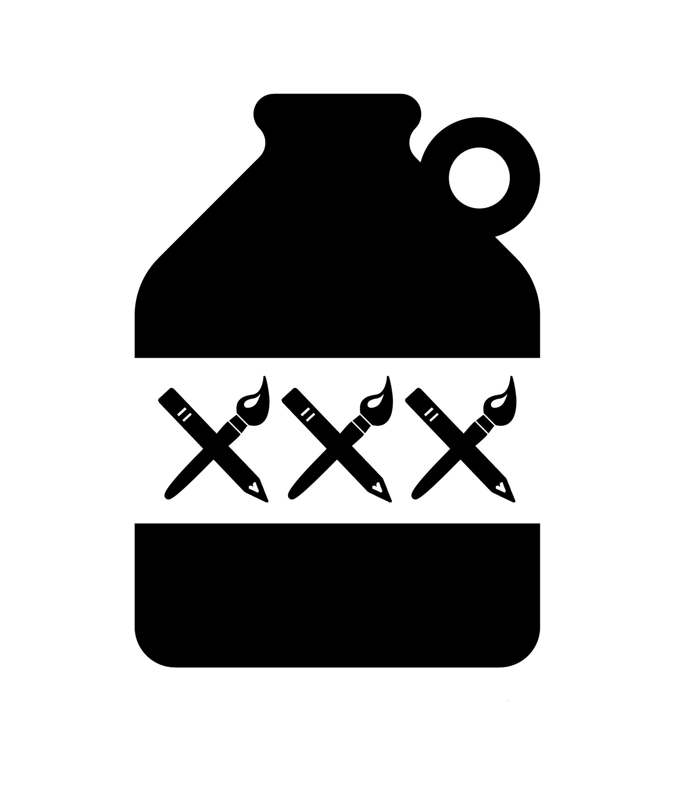

Artabillies
Overall Description
Overall, Artabillies exemplifies the transformative power of creativity and community. By offering a platform that celebrates diverse artistic expressions and cultivating an environment that values inclusivity, Artabillies has made a meaningful impact in the art community and beyond, contributing to a more empathetic, sustainable, and interconnected world.
Combined Concept: Artabillies, Rockabilly, and Hillbilly
Combining the concepts of Artabillies, Rockabilly, and Hillbilly, we get a multifaceted cultural phenomenon:
Artabillies are artists within a collective, promoting vibrant, eclectic, and often psychedelic art through an online platform. Their works span various mediums, including drawings, prints, and wearable art.
Rockabilly is a genre blending rock and roll with country, characterized by its energetic, rebellious style and retro aesthetic, originating in the 1950s.
Hillbilly refers to individuals from rural, mountainous regions, embodying a rustic, self-sufficient lifestyle, often associated with country music.
Combined Concept: An Artabillie embodies the vibrant and eclectic artistic expression of their collective, much like how Rockabilly merges contrasting musical styles into a dynamic genre. They may also draw inspiration from the authentic, back-to-basics ethos of Hillbilly culture, creating art that is both innovative and rooted in tradition. This fusion results in a unique blend of contemporary creativity and nostalgic, rural charm, celebrating individuality and artistic freedom.
In-Depth Exploration of Combined Concepts
Artabillie
Artabillies are contemporary artists who form a collective, promoting their work on an online platform that emphasizes vibrant, eclectic, and often psychedelic art. This collective not only showcases a wide range of artistic mediums, including drawings, prints, and wearable art, but also supports artists by providing a space to sell and promote their unique creations. The art from this collective is often characterized by its bold use of color, innovative themes, and the integration of various artistic techniques, reflecting a modern, inclusive, and diverse art community.
Rockabilly
Rockabilly, a genre born in the 1950s, represents a fusion of rock and roll with country music. It is distinguished by its high-energy performances, catchy rhythms, and a rebellious, youthful spirit. Rockabilly culture also extends to fashion, with its iconic styles such as pompadour hairstyles, leather jackets, and pin-up clothing. This genre celebrates individuality and defiance against the mainstream, capturing the essence of a transformative era in music history.
Hillbilly
The term Hillbilly traditionally refers to people from rural, mountainous regions, particularly in the United States. Hillbilly culture is often associated with a simple, self-sufficient lifestyle, deeply rooted in tradition and the natural environment. Music is a significant aspect of this culture, with country and bluegrass genres reflecting the everyday experiences, hardships, and joys of rural life. The Hillbilly identity embraces authenticity, resilience, and a strong sense of community.
Combined Concept: Artabillie, Rockabilly, and Hillbilly
An Artabillie, when viewed through the combined lens of Rockabilly and Hillbilly influences, embodies a fascinating blend of modern artistic expression and nostalgic cultural elements. These artists might incorporate the energetic and rebellious spirit of Rockabilly, using their art to challenge norms and celebrate individuality. Their work could feature vibrant, dynamic compositions that evoke the same sense of excitement and transformation that Rockabilly music brought to the mid-20th century.
Simultaneously, an Artabillie may draw inspiration from the authentic, rustic charm of Hillbilly culture. This influence could manifest in themes that highlight the beauty of simplicity, the richness of tradition, and the deep connection to nature and community. The art may reflect a respect for the past while reinterpreting it through contemporary lenses, much like how Hillbilly music preserves the essence of rural life in a modern world.
By blending these diverse influences, an Artabillie creates a unique artistic identity that resonates with both the past and present. Their work stands as a testament to the enduring power of cultural fusion, celebrating the rich tapestry of human creativity and the endless possibilities of artistic expression. This combined concept not only honors the legacy of Rockabilly and Hillbilly cultures but also pushes the boundaries of contemporary art, making it a dynamic and inclusive field.
Artabillies’ Mission to Create a Better World
Vision and Philosophy
Artabillies, driven by great and infinite love and kindness, aim to make the world a better place through their artistic endeavors. Their philosophy centers around inclusivity, creativity, and community engagement. By leveraging the power of art, they aspire to foster a more empathetic, understanding, and interconnected world.
Actions and Plans
1. Promoting Diversity and Inclusivity:
• Current Actions: Artabillies showcase a diverse array of artists from different backgrounds, ensuring representation and inclusivity in the art community. They support underrepresented voices and provide platforms for marginalized artists.
• Future Plans: They plan to expand their reach by collaborating with more international artists and hosting global art exchanges, promoting cultural diversity and mutual respect.
2. Community Engagement and Outreach:
• Current Actions: They organize community art projects, workshops, and public installations to engage local communities, encouraging creativity and collaboration. These events often include art education initiatives, making art accessible to all.
• Future Plans: Artabillies aim to establish permanent art centers in various communities, offering continuous support and resources for local artists and residents. They plan to develop art therapy programs to aid in mental health and well-being.
3. Environmental Sustainability:
• Current Actions: The collective is committed to eco-friendly practices, using sustainable materials and promoting green shipping methods. They create art that raises awareness about environmental issues and encourages conservation efforts.
• Future Plans: They plan to launch large-scale environmental art projects that not only highlight ecological concerns but also contribute to restoration efforts. They aim to collaborate with environmental organizations to amplify their impact.
4. Empowerment Through Art:
• Current Actions: Artabillies empower artists by providing platforms for their work, offering financial support, and fostering a supportive community. They believe in the transformative power of art to inspire change and personal growth.
• Future Plans: They plan to introduce mentorship programs, connecting emerging artists with established professionals, and offering grants and residencies to further artistic careers and innovations.
Effectiveness and Impact
1. Cultural Influence: By promoting diverse artistic expressions, Artabillies influence cultural narratives, challenging stereotypes and fostering a more inclusive society.
2. Community Building: Their community engagement projects create strong bonds among participants, fostering a sense of belonging and collective purpose.
3. Environmental Awareness: Their eco-friendly initiatives and environmental art projects raise awareness and inspire action towards sustainability.
4. Personal Empowerment: By supporting artists and making art accessible, they empower individuals, boosting confidence, creativity, and resilience.
Through these multifaceted efforts, Artabillies are effectively contributing to a more empathetic, inclusive, and sustainable world, using art as a powerful tool for social change and community empowerment.
Artabillies Mission Statement
“Artabillies harness the transformative power of art to promote inclusivity, environmental sustainability, and community empowerment. Through diverse artistic expressions and eco-friendly practices, we engage and uplift marginalized voices, foster cultural understanding, and inspire collective action for a better world. Our mission is to create a vibrant, supportive, and sustainable artistic community that drives positive change and enriches lives globally.”
Artabillies Art: A Fusion of Creativity
Artabillies art embodies a vibrant, eclectic, and deeply creative spirit, merging various artistic styles and mediums to create a dynamic and visually engaging body of work. The collective’s art is characterized by its bold use of color, intricate details, and a strong connection to both nature and fantasy.
This diverse range of artistic expressions often includes surreal landscapes, whimsical characters, and abstract forms, all unified by a sense of playful imagination and meticulous craftsmanship.
At the heart of Artabillies’ work is a celebration of creativity in all its forms. The pieces often explore themes of transformation, mythology, and the natural world, reflecting a deep appreciation for the beauty and complexity of life. Whether through detailed glass sculptures, intricate line art, or vibrant paintings, each piece invites viewers into a world where reality and fantasy intertwine, creating a sense of wonder and curiosity.
The art of Artabillies is not just visually striking but also emotionally resonant. The bold colors and dynamic compositions evoke a range of feelings, from joy and playfulness to introspection and awe. This emotional depth, combined with the collective’s technical skill and innovative use of materials, makes Artabillies’ work both memorable and impactful.
In summary: Artabillies art is a rich tapestry of creativity, blending diverse styles and themes into a cohesive and inspiring whole. It is art that speaks to the imagination, inviting viewers to explore new worlds and perspectives, all while celebrating the boundless possibilities of artistic expression.
The Artabillies Collection
The Artabillies collection features a diverse group of artists, including:
- Izwel
- De’Jahn
- Rob Munger
- Chuck Hues
- Laura Bella
- Northern Groove
- Biafra Inc.
- DoodleTek
- Mary Thompson
- Annexea
For a complete list and to view their work, visit the Artabillies website.
Detailed Information About Some Artists:
1. Izwel (Scott Fredell):
• Style: Hypnotic freehand drawings that pull you in and bear the soul.
• Works: Original drawings, prints, patches, and stickers.
• Themes: Izwel’s work often features intricate, flowing lines and surreal compositions.
2. De’Jahn:
• Style: Psychedelic mixed media/collage using a broad range of colors and blacklight reactive themes.
• Works: Paintings, drawings, mixed media, and framed art.
• Themes: De’Jahn’s art is characterized by vibrant colors and psychedelic elements, creating immersive visual experiences.
3. Rob Munger:
• Style: Chaotic abstract art with dark undertones.
• Works: Large scale oil paintings rich in color and depth.
• Themes: Munger’s work often explores themes of chaos and complexity, utilizing a rich palette to convey emotion and depth.
4. Chuck Hues:
• Style: Varied, including hat pins, stickers, and exclusive pieces.
• Works: Diverse artistic expressions ranging from small collectible items to unique art pieces.
• Themes: Hues’ work often includes a playful and eclectic mix of themes and mediums.
5. Laura Bella:
• Style: Original drawings and wearable art.
• Works: Cloth masks, bandanas, original drawings.
• Themes: Bella’s art often combines practical items with artistic designs, blending functionality with aesthetic appeal.
6. Northern Groove:
• Style: Figures and pendants.
• Works: Unique sculptures and wearable art pieces.
• Themes: Northern Groove’s work often includes detailed craftsmanship and artistic jewelry.
7. Biafra Inc.:
• Style: Beautiful and bold graffiti pop-art.
• Works: Handmade original screen prints and graffiti-ready stickers.
• Themes: Biafra Inc. focuses on bold, graphic designs with a street art influence.
8. DoodleTek:
• Style: Paintings and 3D works.
• Works: Varied, including traditional paintings and innovative 3D art.
• Themes: DoodleTek’s art often includes a mix of traditional and modern techniques, creating visually striking pieces.
9. Mary Thompson:
• Style: Cheerful characters, heartfelt concepts, and vibrant colors that awaken the inner child.
• Works: Illustrations, paintings, and mixed media pieces filled with joy and nostalgia.
• Themes: Thompson’s work focuses on themes of happiness, innocence, and storytelling, often portraying whimsical characters in uplifting, colorful settings.
10. Anexxea:
• Style: Mixed media art blending handcrafted materials with an experimental edge.
• Works: Custom frames, collage materials, spray stencils, and sculptures; recently specializing in hand-built custom frames.
• Themes: Anexxea’s work is deeply influenced by personal exploration and transformation, often incorporating found objects and repurposed materials to create unique, thought-provoking art pieces.
These artists contribute to the vibrant and diverse community of Artabillies, each bringing their unique style and perspective to the collective. For more details and to explore their works, visit the Artabillies website.
Additional Artists and Descriptions
Collaborations - The outcome of multiple artists applying their talents to a single piece. The results are truly unique.
INPROGRESSION - Organic rock with many influences including blues, funk, hip-hop, and punk. Experimental sounds, intriguing themes, and thought provoking lyrics.
Northern Groove - Creator and inventor of many glass creatures, from dragons and iconic figures to animals and monsters, strong forms and potent colors.
Chuck Hues - Artist extraordinaire, detailed illustrations, inspirations from Grateful Dead lot and Minneapolis music scene.
DoodleTek - Powerful color combinations and layers of texture bring to life a whimsical world. Acrylic paintings and mixed media figures.
Mary Thompson - Cheerful characters, heartfelt concepts, and vibrant colors that make you smile while awaking the inner child.
Laura Bella - Wearable arts, music, and colorful drawings.
De’Jahn - Psychedelic mixed media/collage using a broad range of colors and blacklight reactive themes
Izwel (Scott Fredell) - Hypnotic freehand drawings that pull you in and bear the soul. Original drawings, prints, patches & stickers.
Rob Munger - Chaotic abstract art with dark undertones. Large scale oil paintings rich in color and depth.
Biafra Inc. - Beautiful and bold graffiti pop-art. Handmade original screen prints and graffiti-ready stickers.
Biafra Inc. is an artist whose work is prominently featured on Artabillies.com, known for their beautiful and bold graffiti pop-art. The art of Biafra Inc. stands out due to its vibrant and striking visual appeal, which blends elements of traditional graffiti with pop-art sensibilities.
DeJahn’s art, featured on Artabillies.com, is renowned for its psychedelic mixed media and collage work. His creations are characterized by a broad range of vibrant colors and blacklight-reactive themes, making them visually striking and immersive.
Laura Bella’s art, showcased on Artabillies.com, is a delightful blend of wearable art, music-themed creations, and colorful drawings. Her work is known for its vibrant use of colors and intricate designs, bringing a sense of joy and creativity to everyday items.
Izwel (Scott Fredell) is an artist featured on Artabillies.com whose work is distinguished by hypnotic freehand drawings that captivate the viewer and evoke deep emotional responses. His art includes original drawings, prints, patches, and stickers.
Northern Groove is an artist featured on Artabillies.com, known for creating and inventing a variety of glass creatures. Their work spans from dragons and iconic figures to animals and monsters, all characterized by strong forms and potent colors.
Mary Thompson’s art, featured on Artabillies.com, is known for its cheerful characters, heartfelt concepts, and vibrant colors. Her work is designed to evoke happiness and nostalgia, awakening the inner child in viewers.
INPROGRESSION is an artist featured on Artabillies.com known for their unique blend of organic rock with a myriad of influences, including blues, funk, hip-hop, and punk. Their art is characterized by experimental sounds, intriguing themes, and thought-provoking lyrics, often conveyed through visually compelling pieces.
Doodletek is an artist featured on Artabillies.com known for their powerful color combinations and layers of texture that bring to life a whimsical world. Their art primarily consists of acrylic paintings and mixed media figures, characterized by vibrant colors and intricate details.
De'Jahn
DeJahn: Psychedelic Visionary and Mixed Media Artist
DeJahn is a pioneering artist whose work blends psychedelic aesthetics with intricate mixed media and collage techniques. His art is a vivid exploration of color, texture, and surreal imagery, often reflecting deep themes of consciousness, perception, and the natural world. Through a mastery of vibrant, blacklight-reactive colors and layered compositions, DeJahn creates immersive experiences that transcend traditional artistic boundaries.
Background and Evolution:
- Roots in Creativity: DeJahn has been cultivating his unique artistic voice since the founding of Artabillies in 2016.
- Interdisciplinary Approach: His work spans multiple artistic disciplines, including painting, collage, digital design, and experimental art.
- Innovative Techniques: DeJahn’s meticulous use of layering, found objects, and UV-reactive pigments results in visually dynamic and transformative pieces.
Defining Features of DeJahn’s Art:
1. Psychedelic and Vibrant: His art features a kaleidoscope of neon colors, swirling patterns, and complex designs that create an intense visual impact.
2. Mixed Media and Collage: Incorporating paints, inks, paper, and found objects, DeJahn layers textures and materials to build intricate compositions.
3. Blacklight-Reactive Elements: Many of his pieces are designed to glow under UV light, revealing hidden details and enhancing their immersive nature.
4. Themes of Consciousness and Nature: His work often explores altered states of perception, celestial bodies, organic forms, and the interconnectedness of all things.
Interactive and Immersive Art
Dynamic Visual Experience:
1. Fluidity and Movement: DeJahn’s work often gives the illusion of motion, pulling viewers into a hypnotic and ever-evolving landscape.
2. Symbolism and Abstraction: His pieces incorporate layers of meaning, inviting interpretation and introspection.
3. Integration with Light: His blacklight-reactive designs enhance the interactivity of his work, making each piece an evolving experience depending on lighting conditions.
Exhibition and Community Engagement:
1. Artabillies Collective: As a co-founder of Artabillies, DeJahn is dedicated to fostering artistic collaboration and community-driven projects.
2. Live Art and Performances: His works are frequently displayed at live music gatherings and experimental art showcases.
3. Expanding Horizons: Future goals include international exhibitions, permanent art installations, and interactive gallery experiences.
Visual and Emotional Impact:
The fusion of color, texture, and symbolic storytelling in DeJahn’s work captivates viewers, offering both an aesthetic and a transformative experience. His art is not just to be seen but to be felt—inviting audiences to journey into the depths of imagination and perception.
To explore DeJahn’s latest works and collaborations, visit Artabillies.com, where his unique artistic vision continues to evolve and inspire.
Laura Bella
Laura Bella: Vibrant Wearable Art and Creative Expressions
Laura Bella is a visionary artist known for her colorful, intricate designs that merge wearable art, music-themed creativity, and eco-conscious craftsmanship. Her work transforms everyday items into artistic statements, celebrating individuality and the joy of self-expression.
Key Artistic Elements:
- Wearable Art: Unique, handcrafted fashion accessories like cloth masks and bandanas, adorned with intricate patterns and vibrant colors.
- Music-Inspired Creations: Designs infused with musical elements, featuring instruments, notes, and rhythmic patterns that echo the harmony of sound.
- Colorful Drawings: Playful and imaginative compositions, characterized by bold palettes and intricate details, creating visually engaging pieces.
- Eco-Friendly Approach: Commitment to sustainability through the use of environmentally friendly materials and responsible production practices.
Wearable Art: Merging Fashion and Creativity
Handcrafted Excellence:
1. Each piece is meticulously crafted, ensuring durability and comfort alongside artistic beauty.
2. Unique, one-of-a-kind designs that make a bold statement in everyday wear.
Functional and Aesthetic Appeal:
1. Lightweight and breathable materials ensure comfort for daily wear.
2. Artistic patterns enhance fashion accessories, making them stand out.
Music-Themed Creations: Art That Resonates
Visual Harmony:
1. Inspired by musical rhythms, instruments, and melodies, Laura’s art captures the essence of sound in visual form.
2. Interwoven musical elements bring a sense of movement and energy to each piece.
Personalized Designs:
1. Custom music-themed creations allow for unique, personalized artistic expressions.
2. A fusion of abstract and representational elements creates dynamic, engaging compositions.
Colorful Drawings: A Celebration of Creativity
Whimsical and Imaginative:
1. Laura’s drawings are filled with intricate patterns, lively colors, and fantastical imagery.
2. Each piece tells a visual story, evoking joy and curiosity.
Bold and Expressive:
1. Bright color palettes create eye-catching and emotionally uplifting compositions.
2. Detailed patterns add depth and complexity, ensuring that each piece is visually captivating.
Eco-Conscious Creativity
Commitment to Sustainability:
1. Uses eco-friendly materials in wearable art, reducing environmental impact.
2. Advocates for green shipping methods to minimize waste and carbon footprint.
Art with a Purpose:
1. Promotes mindful consumerism by offering high-quality, handmade art.
2. Encourages the integration of sustainability into everyday fashion and decor.
Impact and Connection
Bringing Joy Through Art:
1. Laura Bella’s work is designed to inspire happiness, creativity, and self-expression.
2. The vibrant nature of her art fosters a personal connection between the artist and the wearer/viewer.
Art for the Community:
1. Laura’s work is showcased at Artabillies.com, fostering a space where creativity and sustainability thrive.
2. Her collaborations with fellow artists further enrich the art community, blending artistic disciplines and ideas.
Explore more of Laura Bella’s unique art at Artabillies.com. Discover how wearable art and colorful creativity come together in a celebration of individuality and artistic expression.
Chuck Hues
Chuck Hues: Visionary Illustrator and Music-Inspired Artist
Chuck Hues is a renowned illustrator whose work intricately weaves together influences from the Grateful Dead lot scene and the vibrant Minneapolis music culture. His detailed illustrations are defined by bold line work, vivid psychedelic colors, and a deep connection to the spirit of musical exploration.
Artistic Style and Inspirations:
- Intricate Line Work: Chuck’s art is filled with fine details and mesmerizing patterns, drawing viewers into layered, complex compositions.
- Psychedelic Color Schemes: His bold use of color mirrors the surreal, otherworldly aesthetics of the psychedelic music scene.
- Music as a Core Influence: Elements from the Grateful Dead and the Minneapolis music scene are embedded within his art, capturing the essence of movement, rhythm, and free expression.
- Symbolism and Storytelling: Many of his works contain deep symbolic elements, often reflecting themes of unity, mysticism, and the relationship between sound and visual art.
Notable Works and Techniques:
Chuck’s work spans multiple mediums, incorporating traditional pen-and-ink techniques with digital enhancements to create immersive and dynamic illustrations. Some of his most recognized pieces include:
- "Love Tree": A fusion of nature and abstract psychedelia, representing interconnectedness.
- "Harmonium": A rhythmic composition that visually expresses the harmony between sound and color.
- "Frisbee Golf": A playful yet intricate scene combining elements of sport and surrealism.
Custom Artwork and Collaborations:
Chuck Hues is open to custom commissions and collaborations with musicians, artists, and collectors. His ability to translate musical energy into visual form makes him a sought-after illustrator for album covers, posters, and large-scale murals.
Visual and Emotional Impact:
Each piece of Chuck’s art creates a deep visual engagement, encouraging viewers to immerse themselves in the intricate layers of detail. The bold colors and fine line work evoke a sense of nostalgia, wonder, and a connection to the music and culture that inspire his creations.
Contact and More Information:
- Website: www.chuckhuesart.com
- Email: artguychuck1@gmail.com
- Instagram: @artguychuckhues
- Facebook: Chuck Hues on Facebook
Explore more of Chuck Hues’ work at Artabillies.com, where his illustrations bring the intersection of music and visual art to life.
Izwel
Izwel: Hypnotic Freehand Art
Izwel, also known as Scott Fredell, is a visionary artist featured on Artabillies.com. His work is distinguished by hypnotic freehand drawings that captivate the viewer and evoke deep emotional responses. With intricate line work, mesmerizing patterns, and a signature monochromatic style, Izwel’s art explores abstraction, surrealism, and meditative visual experiences.
Key Characteristics of Izwel’s Art:
- Intricate Line Work: Each piece is meticulously crafted with fine, flowing lines that create immersive and dynamic compositions.
- Mesmerizing Patterns: Repetitive geometric and organic forms generate a sense of movement and depth, drawing the viewer into a hypnotic state.
- Monochromatic Aesthetic: Primarily in black and white, his artwork accentuates details, contrasts, and textures that enhance its meditative and surreal qualities.
- Symbolism and Abstract Expression: Hidden meanings and complex patterns encourage personal interpretation and emotional engagement.
Original Drawings, Prints, and Wearable Art
Handcrafted Originals:
Izwel’s original artworks are hand-drawn with precision, often created using fine-tipped pens and ink on high-quality materials. Each piece reflects the artist’s dedication to intricate craftsmanship.
High-Quality Prints:
To make his work more accessible, Izwel offers high-resolution prints that retain the depth and detail of his originals. These collectible prints allow a wider audience to experience his mesmerizing artistry.
Patches and Stickers:
Expanding beyond traditional mediums, Izwel transforms his hypnotic designs into wearable art, including embroidered patches and durable stickers. These items allow fans to incorporate his signature patterns into everyday life.
Themes and Visual Experience
Abstract and Surrealist Influences:
Izwel’s work blurs the line between abstract and surreal art, often resembling dreamscapes filled with intricate, evolving patterns. His compositions create a sense of endless discovery, where each glance reveals new details.
Meditative and Hypnotic Qualities:
His artwork serves as a meditative visual experience, engaging the mind and inviting introspection. The rhythm of his patterns fosters a sense of calm, making his pieces both visually stimulating and deeply immersive.
Symbolic and Emotional Depth:
Beyond aesthetics, Izwel’s art resonates emotionally, often reflecting themes of transformation, connection, and the subconscious. His work encourages viewers to interpret personal meanings within the intricate designs.
Impact and Artistic Vision
Izwel’s unique approach to freehand drawing elevates pattern-based art into a mesmerizing, symbolic experience. By blending meticulous craftsmanship with hypnotic abstraction, he offers a profound visual journey. Whether through original drawings, collectible prints, or wearable patches, his art captivates and inspires.
Discover more about Izwel and his creations on Artabillies.com, where his work is available to collectors, art enthusiasts, and those seeking visually immersive experiences.
Biafra
Biafra Inc.: Graffiti Pop-Art Visionary
Biafra Inc. is a bold and expressive artist known for their striking fusion of graffiti and pop-art. Their work stands out due to its high-energy visuals, sharp social commentary, and an undeniable connection to urban culture. Utilizing a mix of street art techniques, screen printing, and vibrant color palettes, Biafra Inc. crafts pieces that challenge perspectives while celebrating the raw creativity of the streets.
Artistic Identity and Evolution:
- Roots in Street Art: Biafra Inc. emerged from the dynamic street art scene, blending graffiti aesthetics with pop culture elements.
- Signature Style: Their art features bold lines, high-contrast colors, and layered textures that create a visually striking and immersive experience.
- Multi-Medium Approach: From large-scale murals to screen prints and graffiti stickers, Biafra Inc. adapts their work to various formats, making it widely accessible.
Visual Elements and Themes
Graffiti Meets Pop-Art:
1. Street Art Aesthetic: Biafra Inc.’s work incorporates classic graffiti techniques such as spray paint textures, stenciling, and layered tagging.
2. Pop-Art Influence: The use of bold primary colors, repetition, and iconic imagery connects their work to the pop-art movement.
3. Iconic Symbolism: Their pieces often feature reimagined cultural icons, layered with an urban and rebellious twist.
Social and Cultural Commentary:
1. Urban Life Reflection: Biafra Inc. captures the essence of city life, highlighting themes of rebellion, identity, and resilience.
2. Political and Social Dialogue: Their work frequently incorporates subtle or direct critiques of contemporary issues, making it thought-provoking and impactful.
3. Playful Yet Provocative: While visually engaging, their art often carries deeper messages that challenge societal norms and encourage conversation.
Screen Prints, Murals, and Stickers
Handcrafted Prints and Street Distribution:
1. Limited Edition Screen Prints: Biafra Inc. creates hand-pulled screen prints, ensuring each piece maintains the raw energy of their original work.
2. Urban Placement: Their graffiti stickers and street art installations can be found in major cities, turning public spaces into artistic statements.
3. Collector’s Appeal: Their prints and works are highly sought after by collectors and art enthusiasts who appreciate the fusion of street culture with fine art techniques.
Impact and Artistic Vision
Creating an Urban Legacy:
1. Art Beyond the Gallery: Biafra Inc. believes in art as a living, breathing part of the city, meant to be experienced by all.
2. Community Engagement: Their work fosters a connection between artists and the public, sparking dialogue through visual storytelling.
3. Timeless Influence: By merging classic graffiti culture with modern pop-art sensibilities, Biafra Inc. carves out a unique and lasting impact on contemporary art.
Discover more about Biafra Inc. and explore their powerful collection at Artabillies.com. Whether through large-scale murals, handcrafted prints, or urban stickers, Biafra Inc. continues to redefine the intersection of graffiti and pop-art.
Mary Thompson
Mary Thompson: Whimsical and Heartfelt Art
Mary Thompson is an artist known for her vibrant and emotionally resonant artwork, featuring cheerful characters and heartfelt themes. Her work evokes happiness and nostalgia, awakening the inner child in viewers through whimsical storytelling and expressive illustrations.
Key Characteristics of Mary Thompson’s Art:
- Cheerful Characters: Her art is filled with whimsical, anthropomorphized animals and imaginative beings, each radiating joy and friendliness.
- Expressive Faces: Characters in her work display a range of positive emotions, fostering an immediate connection with the viewer.
- Vibrant Colors: A bright and harmonious color palette enhances the uplifting and nostalgic essence of her creations.
Artistic Style and Techniques:
- Soft, Fluid Lines: Her illustrations are characterized by smooth, flowing lines that add movement and life to her characters.
- Detailed Illustrations: Attention to small details, such as textures and patterns, enriches each piece with depth and personality.
- Storytelling Elements: Every artwork captures a moment in an imagined world, inviting viewers to explore and engage with the narrative.
Emotional and Visual Impact
Uplifting and Joyful:
1. Mary Thompson’s art is designed to bring happiness and positivity, making it an instant source of joy.
2. The whimsical themes and cheerful characters create an inviting, heartwarming atmosphere.
Reflective and Nostalgic:
1. Many of her pieces draw inspiration from childhood memories, sparking a sense of nostalgia and wonder.
2. Her work encourages viewers to reconnect with their own cherished moments and emotions.
Themes and Inspirations
Nature and Fantasy:
1. Her art blends the beauty of the natural world with fantastical elements, making the ordinary feel magical.
2. She creates immersive dreamlike environments where imagination and reality intertwine.
Love and Friendship:
1. Many of her pieces explore themes of companionship and connection, celebrating the bonds that bring joy to life.
2. Expressive storytelling and character interactions make each illustration deeply relatable.
Overall Artistic Contribution:
Mary Thompson’s work, as featured on Artabillies.com, is a testament to the power of color, emotion, and storytelling in visual art. Her pieces serve as a reminder of the joy, innocence, and warmth that art can bring into people’s lives.
Rob Munger
Rob Munger: Chaotic Abstract Visions
Rob Munger is a visionary artist whose large-scale oil paintings are known for their chaotic abstract style with dark undertones. His work combines dynamic compositions, complex layers, and vivid colors, creating emotionally evocative and visually striking pieces.
Key Characteristics of Munger’s Art:
- Chaotic Abstract Style: His paintings feature intricate patterns, fragmented structures, and an interplay of contrasting colors and textures.
- Dark Undertones: A moody and introspective atmosphere permeates his work, often invoking themes of depth, intensity, and emotional complexity.
- Rich in Color and Depth: Munger’s use of thick oil layers creates a sense of motion and layered meaning, drawing viewers into a multifaceted experience.
Visual and Emotional Impact:
Munger’s paintings challenge the viewer, pushing the boundaries of traditional abstract expressionism. His work is not just seen—it is felt, immersing the observer in a world of intense color contrasts, layered textures, and deep symbolic resonance.
Exploring the Depths of Munger’s Work
Techniques and Artistic Process:
1. **Layered Composition** – Utilizing thick applications of oil paint, Munger builds depth and movement in each piece.
2. **Expressive Brushwork** – His signature chaotic yet intentional strokes create a raw, unfiltered energy.
3. **Contrast and Light Play** – The balance of darkness and bursts of vibrant color enhances the narrative quality of his work.
Symbolism and Themes:
1. **Emotional Depth** – Themes of introspection, chaos, and transformation run through his work.
2. **Abstract Storytelling** – Though non-representational, his paintings evoke a sense of journey, struggle, and revelation.
3. **Modern and Timeless** – His technique blends contemporary abstract styles with classical oil painting methods.
Exhibitions and Availability
Munger’s artwork can be viewed at Artabillies.com, where select pieces are available for purchase. His unique approach to abstract expressionism continues to captivate audiences, making his work a vital part of the Artabillies collective.
DoodleTek
DoodleTek: Vibrant Imagination in Motion
DoodleTek is an artist celebrated for their bold color palettes, intricate textures, and dynamic compositions. Their work spans various mediums, including acrylic paintings, mixed media figures, Temari balls, and even sculpted clay pieces. DoodleTek’s artistic vision merges surreal, whimsical themes with intricate detailing, creating visually arresting and emotionally resonant works of art.
Key Elements of DoodleTek’s Art:
- Powerful Color Combinations: Rich, saturated colors such as deep blues, fiery oranges, and electric greens define their striking visual aesthetic.
- Layered Textures: Expressive brushwork and multi-layered surfaces create depth and movement, drawing viewers into each piece.
- Whimsical & Surreal Imagery: Dreamlike elements, abstract floral motifs, and intricate geometric designs evoke a sense of wonder and intrigue.
- Traditional Meets Contemporary: Incorporates elements of classic Japanese Temari art with modern interpretations of mixed media sculpture.
Exploring DoodleTek’s Artistic Mediums
Acrylic Paintings:
DoodleTek’s paintings feature vibrant landscapes, swirling abstract forms, and surreal figures. Their use of expressive brushstrokes and bold color contrasts results in pieces that pulse with energy. Recurring themes include fantastical gardens, cosmic dreamscapes, and richly detailed patterns.
Temari Balls:
Intricately embroidered spheres wrapped in silk and cotton threads, showcasing geometric precision and color harmony. These handcrafted ornaments symbolize tradition and friendship, while DoodleTek adds their signature vibrant touch.
Sculpture and Clay Art:
DoodleTek’s sculptural works experiment with organic shapes and flowing lines, often incorporating intricate carvings and bold, textural details. The use of vivid purples, fiery reds, and warm oranges enhances the dynamic movement within each piece.
Custom Handmade Artworks
Decorative Cakes: A surprising addition to DoodleTek’s creative repertoire, their cake decorations mirror their artistic style—featuring delicate, swirling patterns and masterful color transitions.
Crocheted Accessories: DoodleTek also crafts custom crocheted bottle holders, each handmade with care and available in different designs. These pieces showcase the artist’s skill beyond traditional canvas work.
Visual & Emotional Impact
DoodleTek’s art is a sensory experience—layered with vibrant hues, intricate patterns, and dynamic movement. Their work invites the viewer to explore deep symbolism, personal expression, and the merging of fantasy with reality.
Connect with DoodleTek:
- Instagram: @doodletek_mandi
- Website: Artabillies - DoodleTek
- Email: doodletek@gmail.com
For more artwork, including paintings, sculptures, and handmade crafts, visit DoodleTek’s gallery on Artabillies.com.
Northern Groove
Northern Groove: Master of Glass Creatures
Northern Groove is an artist known for creating intricate and imaginative glass creatures. Their work spans mythical dragons, whimsical animals, and abstract monsters, all brought to life through strong forms and potent colors. Each piece is a unique blend of craftsmanship and artistic vision, combining traditional glassblowing techniques with modern creative expression.
Key Characteristics of Northern Groove’s Art:
- Glass Creatures: Northern Groove specializes in crafting dragons, animals, and mythical monsters, each uniquely designed with a combination of realism and fantasy.
- Intricate Detailing: Every sculpture features fine details such as textured scales, expressive eyes, and layered color gradients, giving each piece a sense of personality and life.
- Potent Colors: The use of vibrant, bold, and blended hues creates striking visual effects, with color transitions that enhance depth and movement.
- Glass Blowing and Sculpting: Combining traditional and experimental techniques, Northern Groove manipulates molten glass with precision, creating durable yet delicate forms.
- Symbolism and Storytelling: Many of the pieces carry symbolic meaning, drawing from mythology, nature, and abstract themes to create works that evoke emotion and curiosity.
Signature Glass Art Pieces
Northern Groove’s collection features a range of captivating works, including:
- Glass Snake: A fluid, green-scaled glass snake, embodying transformation and movement.
- Glass Mushroom Mouth Monster: A fierce yet playful transparent bulldog with exaggerated teeth.
- Glass Dragon Heads: A series of dragon head sculptures in varying colors and textures, each symbolizing power and mysticism.
- Glass Dancing Bear: A whimsical bear with a crescent moon embedded in its belly, showcasing themes of joy and imagination.
Visual and Emotional Impact
The unique combination of vivid colors, intricate textures, and expressive forms makes Northern Groove’s art visually arresting. Each piece is designed to capture attention and evoke wonder, bridging the gap between fantasy and reality. The interaction of light with the glass further enhances the ethereal quality of the sculptures.
Explore More
Northern Groove’s art is featured on Artabillies.com, where viewers can explore their complete collection and experience the depth of their craftsmanship. Whether through standalone sculptures or wearable glass pieces, Northern Groove continues to push the boundaries of artistic glassmaking, creating works that inspire and captivate.
Collaborations
Anexxea: A Passionate Tinkerer and Creator
Anexxea is a multifaceted artist known for experimenting across various art realms. Their artistic journey spans from offering materials for others to create collages, spray stencils, and garbage art, to tearing apart electronics, creating music, and sculpting potent pieces. Now specializing in custom framing, Anexxea’s diverse experiences and community interactions have shaped their current artistic endeavors.
Background and Evolution:
- Origins: Originally from Minneapolis, MN, Anexxea has now established roots in Colorado.
- Artistic Journey: Anexxea has engaged in a wide array of artistic pursuits, including photography and custom framing, reflecting a vibrant career marked by continuous evolution and adaptation.
- Current Focus: Today, Anexxea’s expertise lies in hand-building and custom framing art pieces like those of DeJahn, with meticulous attention to color matching and proportions.
Contact Information: anexxea_1134@yahoo.com
Custom Frames for DeJahn’s Art
Material and Craftsmanship:
1. High-Quality Materials: Anexxea uses premium woods and metals to ensure durability and a high-end finish for the frames.
2. Artisanal Craftsmanship: Each frame is handcrafted with precision, showcasing meticulous attention to detail that enhances the artwork’s aesthetic value.
Design and Aesthetic:
1. Complementary Designs: Frames are tailored to match DeJahn’s psychedelic and eclectic art style, using vibrant colors and patterns that reflect the themes within the artwork.
2. Intricate Details: Carved patterns and textured surfaces add depth and character to the frames, enhancing the overall presentation.
Functional and Decorative Elements:
1. Protective Features: Frames include UV-resistant glass to protect the artwork from sunlight, preserving the vibrancy and integrity of the mixed media components.
2. Decorative Enhancements: Frames serve as decorative elements, drawing the viewer’s eye to the artwork and making it a focal point in any room.
Customization and Uniqueness:
1. Custom-Made Fit: Each frame is custom-made to fit specific pieces of DeJahn’s art, ensuring a perfect fit and seamless integration.
2. Unique Designs: No two frames are alike, reflecting Anexxea’s commitment to uniqueness and individuality, making each frame a piece of art in itself.
Visual and Functional Impact:
The combination of DeJahn’s vibrant, psychedelic art and Anexxea’s custom frames results in visually stunning and cohesive presentations. The frames not only protect and preserve the artwork but also enhance its visual appeal, making each piece stand out.
For more detailed information and to view the framed artworks, visit Artabillies.com. This platform showcases the collaborative efforts between artists like DeJahn and Anexxea, highlighting the unique blend of art and craftsmanship.
INPROGRESSION
INPROGRESSION: Musical and Visual Art
INPROGRESSION is a musical group known for their unique blend of organic rock with a myriad of influences, including blues, funk, hip-hop, and punk. Their music is characterized by experimental sounds, intriguing themes, and thought-provoking lyrics, often conveyed through visually compelling performances and artwork. Here’s a detailed description of INPROGRESSION’s musical and visual art:
Key Characteristics of INPROGRESSION’s Art:
1. Musical Influence:
• Diverse Genres: INPROGRESSION’s music is deeply influenced by various musical genres such as blues, funk, hip-hop, and punk. This eclectic mix creates a rich tapestry of sounds and themes that are reflected in their performances and visual presentations.
• Rhythmic and Dynamic: Their music often mirrors the rhythm and dynamism of these genres. This can be seen in their energetic performances, flowing lines, bold stage setups, and vibrant compositions that convey a sense of movement and energy.
2. Experimental Sounds and Visuals:
• Innovative Techniques: INPROGRESSION employs innovative techniques in their music production and performances. This can include mixed media, digital manipulation, and unconventional instruments or sounds that add unique textures and depth to their music.
• Abstract and Avant-Garde: Their visuals are often abstract and avant-garde, pushing the boundaries of traditional music videos and stage designs. This experimental approach results in performances that are both visually striking and intellectually stimulating.
3. Intriguing Themes:
• Social and Cultural Commentary: The themes in INPROGRESSION’s music frequently address social and cultural issues. Their songs can include commentary on contemporary life, societal norms, and cultural identities, encouraging listeners to reflect on these topics.
• Personal Expression: There is a strong element of personal expression in their music. The lyrics and compositions often feel introspective, exploring themes of identity, emotion, and personal experiences, making their work deeply resonant with audiences.
4. Thought-Provoking Lyrics:
• Incorporation of Text: INPROGRESSION’s music often includes lyrical elements that are poetic and thought-provoking. These lyrics add an additional layer of meaning to their music, enhancing the overall impact of each song.
• Narrative Quality: The lyrics and textual elements help to create a narrative quality within their music. Each song tells a story or conveys a message, inviting listeners to engage with the music on a deeper level.
5. Visual and Emotional Impact:
• Bold and Vibrant: The use of bold sounds and vibrant compositions makes INPROGRESSION’s music visually and audibly arresting. Their performances and music videos are designed to capture the audience’s attention and draw them into the intricate details and themes.
• Emotional Depth: Beyond the visual and auditory appeal, their music also has significant emotional depth. The combination of personal expression, social commentary, and thought-provoking lyrics creates a powerful emotional resonance.
Conclusion:
INPROGRESSION’s music at Artabillies.com is a compelling fusion of auditory and visual creativity. Their work, characterized by diverse musical influences, experimental techniques, and thought-provoking themes, offers a unique and engaging artistic experience. The bold visuals, combined with lyrical and narrative elements, create a rich tapestry that invites listeners to explore and reflect. Through their music, INPROGRESSION successfully blurs the lines between different genres, creating a dynamic and impactful body of work that resonates on multiple levels.
INSIGHT INTO ARTABILLIES
ARTABILLIES
BUDFEST BOOTH
Categories and Products
General Categories:
- Wearable
- Music
- Paintings
- Prints
- Drawings
- Framed Art
- Glass Art
- Fire Props
- Hat Pins
- Stickers
Specific Artists and Products:
-
Izwel (Scott Fredell)
- All Products
- Original Drawings
- Color Prints
- Black & White Prints
- Patches
- Stickers
-
De’Jahn
- All Products
- Paintings
- Drawings
- Mixed Media
- Framed
- Music
- Mary Thompson - Cheerful characters, heartfelt concepts, vibrant colors
-
Rob Munger
- Paintings
- Framed
- Collaborations
- Chaotic abstract art with dark undertones
-
Chuck Hues
- All Products
- Hat Pins
- Stickers
- Exclusives
- Detailed illustrations, inspirations from Grateful Dead lot and Minneapolis music scene
-
Laura Bella
- All Products
- Cloth Masks
- Bandanas
- Original Drawings
- Wearable arts, music, colorful drawings
-
Northern Groove
- All Products
- Figures
- Pendants
- Creator of many glass creatures, strong forms, and potent colors
-
Biafra Inc.
- All Products
- Color Prints
- Framed
- Printed on Wood
- Stickers
- Beautiful and bold graffiti pop-art
- INPROGRESSION - Organic rock with influences including blues, funk, hip-hop, punk
-
DoodleTek
- All Products
- Paintings
- 3D Works
- Powerful color combinations, whimsical themes
Additional Information:
• Collaborations: Unique pieces by multiple artists
• Artist Info
• Search All
• My Cart
• Contact Us
• About
• Laura Bella
• Green Shipping: Free shipping with reused, recycled materials
• Returns
• Payment Policy
• Privacy Policy
• Blog
Artabillies art embodies a vibrant, eclectic, and deeply creative spirit, merging various artistic styles and mediums to create a dynamic and visually engaging body of work. This art collective’s pieces are characterized by bold use of color, intricate details, and themes that often explore transformation, mythology, and nature. The works invite viewers into surreal, fantastical landscapes, blending reality and imagination. The emotional depth and meticulous craftsmanship make Artabillies’ art both visually striking and emotionally resonant, celebrating creativity in its myriad forms.
The Artabillies Facebook page is a platform dedicated to showcasing diverse art forms, including wearable arts, paintings, prints, framed art, and mixed media. It highlights the work of artists like Rob Munger, De’Jahn, Laura Bella, and Izwel, each bringing their unique styles and creativity to the community. The page emphasizes collaboration, community engagement, and regularly updates followers on events and new artworks. It’s a supportive space for artists and art enthusiasts to connect and celebrate creativity. For more, visit the Artabillies Facebook page.
The Artabillies Facebook group is a lively online community where artists share their diverse works, engage in creative discussions, and collaborate on art projects. The group encourages members to introduce themselves, showcase their latest art, and participate in events like webinars and workshops. It fosters a supportive environment for sharing resources, offering feedback, and enhancing artistic skills. The group emphasizes collaboration and creativity, making it a vibrant space for both artists and art enthusiasts. For more, visit the Artabillies Facebook group.
The Artabillies Instagram page (@artabillies) is a vibrant showcase of diverse artworks from various artists, including paintings, sculptures, mixed media, and more. The account highlights the unique styles and creations of artists like DeJahn, Laura Bella, Izwel, and Rob Munger. It serves as a platform for these artists to share their latest works, updates, and engage with the art community. To explore more, visit the Artabillies Instagram page.
ARTABILLIES
DONT FEED THE ARTIST BUY THEIR ART AND THEY WILL FEED THEMSELVES

Useful Links
Here are a few sample links to external resources or social pages.
Artabillies Rstory & TUDE
Rstory Official Website
FOOD4THOTH
Dobbs Gallery
Recognition
Artabillies was recently awarded 1 million Rstory Gratitude Tokens (TUDEs) by Rstory, acknowledging its contributions to the arts and community. This recognition highlights the collective's transformative impact and dedication to inclusivity and sustainability. Article
Community Praise
"I love this!!!! The Artabillies website is AWESOME! I love the sound of community centers focusing on wellness and art - what a natural combination. As Toni Cade Bambara says, 'The role of the artist is to make the revolution irresistible!' Congrats to DeJahn and all those connected to Artabillies. Looking forward to seeing all the other amazing people and groups that will shine when they find out about RStory :)"
Message from TUDE Creator
"Thanks for your support!!! Artabillies represents the best of grassroots creativity. I'm thrilled Rstory can showcase them."
Do You Do Dobbs? RSTORY Gallery
Created by De’Jahn of Artabillies and Food4Thoth, the Do You Do Dobbs? RSTORY Gallery is an exclusive digital art experience that merges psychedelic aesthetics, blockchain technology, and digital ownership. This gallery presents whimsical, vibrant cartoon illustrations of a distinguished gentleman in a top hat and monocle, engaging in an unexpected activity—doing cannabis dabs—while humorously asking, "Do you do Dobbs?" The playful contrast between aristocratic elegance and laid-back indulgence creates a captivating visual experience, blending sophistication with absurdity.
DeJahn: The Visionary Behind DOBBS
DeJahn is a celebrated artist known for his psychedelic, surreal, and mixed-media approach. His work captures the depths of consciousness, the cosmos, and the human experience, using intricate patterns, vibrant colors, and digital innovation. His digital artworks are not just images—they are experiences designed to immerse, provoke thought, and inspire exploration.
Unlocking DeJahn’s Art with RSTORY and TUDE Tokens
This gallery offers high-resolution versions of DeJahn’s iconic artworks, available exclusively to token holders. Access to these premium digital pieces is token-gated, meaning that only those who own an RSTORY or TUDE token can unlock and download DeJahn’s work in PNG or JPEG formats.
What Are RSTORY and TUDE Tokens?
A blockchain token is a secure, decentralized digital asset that provides exclusive access to premium content. In this gallery, owning an RSTORY or TUDE token functions as a membership key, unlocking high-resolution digital art.
About RSTORY and TUDE Tokens
- RSTORY Token: Available on the EOS network via the Anchor wallet, RSTORY supports creative collaborations in digital art. Owning RSTORY provides access to exclusive content and experiences while fostering a community of artists and collectors.
- TUDE Token: TUDE operates on the Ethereum blockchain and can be accessed via MetaMask. Holding TUDE grants global access to DeJahn’s digital art and other premium blockchain-powered content.
How to Unlock and Download DeJahn’s Art
- Acquire a Token: Purchase an RSTORY or TUDE token from the respective blockchain markets.
- Connect Your Wallet:
- Use Anchor Wallet (EOS) for RSTORY tokens.
- Use MetaMask (Ethereum) for TUDE tokens. - Verify Your Token Ownership: The system automatically checks if your wallet contains the required token.
- Access & Download: Once verified, you can download DeJahn’s high-resolution artwork in PNG or JPEG format, ensuring a pristine visual experience.
The Future of Digital Art with RSTORY
RSTORY is shaping the next generation of digital art. By integrating blockchain technology, RSTORY enables authentic digital ownership while fostering a global art community. Collaborations with artists like DeJahn push the boundaries of creative expression in decentralized art platforms.
- Empowering Artists: Fair compensation through digital scarcity.
- Protecting Ownership: Verifiable authenticity of digital works.
- Expanding Community: A decentralized movement for collectors and art lovers.
Join the Movement
Step into the Do You Do Dobbs? RSTORY Gallery and explore the new frontier of digital art ownership. Be part of a movement where art, technology, and philosophy collide.
Dobbs Gallery
Visit Artabillies.com to explore DeJahn’s exclusive blockchain-based art gallery and unlock premium artwork.
High-Resolution Product Images
- SEE FULL GALLERY AFTER CONNECTING YOUR WALLET HERE
- VIEW AND PURCHASE DEJAHN'S PHYSICAL ART HERE AND GAIN RSTORY TOKENS
Links to Wallets
Tokenized Access to Digital Goods
RSTORY is a crypto token with zero decimals, operating on multiple blockchains. Each RSTORY token (TUDE) represents an indivisible unit of gratitude, designed for secure and transparent transactions in the art world.
- Ethereum Symbol: TUDE
(0xa9deffb371dd9c)
7fd2cfc6676cdb
3bc394b45a42 - EOS Symbol: RSTORY (Created by
rstorytokens) - View on Blocks.io
- Read the Revised Whitepaper
- Join the RSTORY Telegram Community